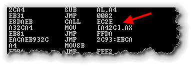

Back in the computing "iron-age",
when programmers wrote their code in machine or assembly language,
to manipulate a data element representing quarterly sales or the
velocity of a missile, you simply used the data element's
memory address, like the line shown below,
which assigns a value (stored in the CPU's AX register)
to the memory location A42C.

When high-level language, like FORTRAN and COBOL were developed, they made things much easier, because now programmers could use names for the data elements inside their programs; when the programmer wrote something like this:
int velocity = 125;
there was no more need to keep track of exactly where the
value 125 was stored in memory; the high-level language
compiler took care of the minutia of associating the memory
address A42C (or, whatever) with the variable
named velocity.
Even better, though was the fact that the compiler could now
keep track of what kind of thing you stored in the memory
location A42C and warn you if you made a mistake.
Variables were no longer just chunks of arbitrary bits; each
variable now had a specific data type, like
char, boolean, int
or double.
User-Defined Types
Each high-level language, from FORTRAN and COBOL in the 1950s, to Java and C++ today comes with a pre-defined, built-in set of data types. In Java, these are the primitive types you met in the first half of the semester.
However, programmers soon discovered that they wanted more.
Financial programmers wanted real numbers, scientific programmers
couldn't live without imaginary numbers. Business programmers
wanted dates and times, while graphics programmers really
needed points and shapes.

Rather than adding all of these extensions as built-in types, though, language designers found it better to give programmers the ability to define their own types. That's what you'll learn how to do in this unit.
Scalar and Structured Types
 We can divide user-defined types into types that contain a
single value, called scalar types, and types that combine
multiple data items into a larger unit, which are generally
known as structured types.
We can divide user-defined types into types that contain a
single value, called scalar types, and types that combine
multiple data items into a larger unit, which are generally
known as structured types.
The Weekday user-defined type picture to the right
is an example of a scalar type that contains only a
single simple value, while the Date type illustrated
here is a structured type, consting of a month, day and
year.
All of the built-in, primitive data types—int, char,
boolean and double—are scalar
data types. Java's class types, such as String,
are structured types.
In addition to the built-in primitive types, Java lets you define your own scalar type, called an enumerated type. Let's look at that now.
Enumerated Types
To create your own scalar, enumerated types in Java, you have to do two things:
- Supply a name for your new type in an
enumdefinition. This is similar to aclassdefinition which we'll study in the next lesson. - Provide a list of all possible values that the type can contain. These are not integer literals, but names that represent the different values a variable could take on.
Let's look at a simple example: the days of the week:
An enum type is a type whose fields consist of a fixed set of constants. Common examples include compass directions (values of NORTH, SOUTH, EAST, and WEST) and the days of the week.
Because they are constants, the names of an enum type's fields are in uppercase letters.
In the Java programming language, you define an enum type by using the enum keyword. For example, you would specify a days-of-the-week enum type as:
public enum Day {
SUNDAY, MONDAY, TUESDAY, WEDNESDAY,
THURSDAY, FRIDAY, SATURDAY
}
You should use enum types any time you need to represent a fixed set of constants. That includes natural enum types such as the planets in our solar system and data sets where you know all possible values at compile time—for example, the choices on a menu, command line flags, and so on.
Here is some code that shows you how to use the Day enum defined above:
public class EnumTest {
Day day;
public EnumTest(Day day) {
this.day = day;
}
public void tellItLikeItIs() {
switch (day) {
case MONDAY: System.out.println("Mondays are bad.");
break;
case FRIDAY: System.out.println("Fridays are better.");
break;
case SATURDAY:
case SUNDAY: System.out.println("Weekends are best.");
break;
default: System.out.println("Midweek days are so-so.");
break;
}
}
public static void main(String[] args) {
EnumTest firstDay = new EnumTest(Day.MONDAY);
firstDay.tellItLikeItIs();
EnumTest thirdDay = new EnumTest(Day.WEDNESDAY);
thirdDay.tellItLikeItIs();
EnumTest fifthDay = new EnumTest(Day.FRIDAY);
fifthDay.tellItLikeItIs();
EnumTest sixthDay = new EnumTest(Day.SATURDAY);
sixthDay.tellItLikeItIs();
EnumTest seventhDay = new EnumTest(Day.SUNDAY);
seventhDay.tellItLikeItIs();
}
}
The output is:
Mondays are bad.
Midweek days are so-so.
Fridays are better.
Weekends are best.
Weekends are best.
Java programming language enum types are much more powerful than their counterparts in other languages. The enum declaration defines a class (called an enum type). The enum class body can include methods and other fields. The compiler automatically adds some special methods when it creates an enum. For example, they have a static values method that returns an array containing all of the values of the enum in the order they are declared. This method is commonly used in combination with the for-each construct to iterate over the values of an enum type. For example, this code from the Planet class example below iterates over all the planets in the solar system.
for (Planet p : Planet.values()) {
System.out.printf("Your weight on %s is %f%n",
p, p.surfaceWeight(mass));
}
Note: All enums implicitly extend java.lang.Enum. Since Java does not support multiple inheritance, an enum cannot extend anything else.
In the following example, Planet is an enum type that represents the planets in the solar system. They are defined with constant mass and radius properties.
Each enum constant is declared with values for the mass and radius parameters. These values are passed to the constructor when the constant is created. Java requires that the constants be defined first, prior to any fields or methods. Also, when there are fields and methods, the list of enum constants must end with a semicolon.
Note: The constructor for an enum type must be package-private or private access. It automatically creates the constants that are defined at the beginning of the enum body. You cannot invoke an enum constructor yourself.
In addition to its properties and constructor, Planet has methods that allow you to retrieve the surface gravity and weight of an object on each planet. Here is a sample program that takes your weight on earth (in any unit) and calculates and prints your weight on all of the planets (in the same unit):
public enum Planet {
MERCURY (3.303e+23, 2.4397e6),
VENUS (4.869e+24, 6.0518e6),
EARTH (5.976e+24, 6.37814e6),
MARS (6.421e+23, 3.3972e6),
JUPITER (1.9e+27, 7.1492e7),
SATURN (5.688e+26, 6.0268e7),
URANUS (8.686e+25, 2.5559e7),
NEPTUNE (1.024e+26, 2.4746e7);
private final double mass; // in kilograms
private final double radius; // in meters
Planet(double mass, double radius) {
this.mass = mass;
this.radius = radius;
}
private double mass() { return mass; }
private double radius() { return radius; }
// universal gravitational constant (m3 kg-1 s-2)
public static final double G = 6.67300E-11;
double surfaceGravity() {
return G * mass / (radius * radius);
}
double surfaceWeight(double otherMass) {
return otherMass * surfaceGravity();
}
public static void main(String[] args) {
double earthWeight = Double.parseDouble(args[0]);
double mass = earthWeight/EARTH.surfaceGravity();
for (Planet p : Planet.values())
System.out.printf("Your weight on %s is %f%n",
p, p.surfaceWeight(mass));
}
}
If you run Planet.class from the command line with an argument of 175, you get this output:
$ java Planet 175
Your weight on MERCURY is 66.107583
Your weight on VENUS is 158.374842
Your weight on EARTH is 175.000000
Your weight on MARS is 66.279007
Your weight on JUPITER is 442.847567
Your weight on SATURN is 186.552719
Your weight on URANUS is 158.397260
Your weight on NEPTUNE is 199.207413
Creating Variables
Assigning Values
Flow of Control
Input and Output
The Need for Enumerated Types
Do you remember how to create a font? You use one of the
Font constructors, like this example from
Unit 7:
 When you call the
When you call the Font constructor, you pass three
parameters. The last two parameters, style and
size are both of type int.
When you use this constructor, instead of passing an arbitrary
int for the style, you'll use one of the predefined
Font class constants, like Font.PLAIN
or Font.BOLD. That causes two problems, however:
- Because both the second and third parameter are type
int, the compiler can't warn you if you accidentally switch the order of the parameters, like this:
Font bigFont = new Font("Monospaced", 36, Font.BOLD);
- You don't even get a runtime error, like you do if
you pass an "out of range" int to the
Colorconstructor. All you get is itsy-bitsy font in an unknown style. (That's because the actual value used forFont.BOLDis simply the integer 1. (Font.PLAINis the value 0, whileFont.ITALICis the value 2). When we pass 64 to the second (style) parameter, it's simply ignored, since it is a validintvalue.
Things would be a whole lot better if we could rewrite the
Font constructor so that the second parameter was
a different type entirely, something like this:
Font(String name, FontStyle style, int size)
Then, if we called the constructor with the parameters in the wrong order, the compiler would tell us that we'd made a mistake, just as if we tried to use an integer for the font name.
Unfortunately, it's too late for the Font class,
which was developed before the Java language permitted user-defined
enumerated types. Your programs and classes don't have to
suffer in this way though.
Advanced Enumerated Types
Constructors and Secondary Values
Additional Methods
Coming Up ...
In this lesson you learned
In the next lesson,